“지금 어디가 한산할까?” — 실시간 혼잡도 + 한산할 때 즐기는 한국 여행
운영 주소 https://crowdview.app · 저장소 ryu-han-kr/CrowdView · 5개 언어(ko·en·ja·zh-CN·zh-TW)
작성 기준: 2026-10-17 main 브랜치(PR #67까지 머지)와 운영 사이트 화면. 숫자는 코드·데이터 파일·설정 파일에서 직접 확인한 값이고, “제안”이라고 적은 것은 아직 정하지 않은 목표값입니다.
CrowdView는 공항·놀이공원·명소·축제·서울 주요 지역의 “지금 혼잡도”와 시간대별 예측을 보여 주고, 이를 바탕으로 덜 붐비는 시간·순서로 도는 여행 코스를 짜 주는 웹 서비스입니다. 한국어로 접속하면 혼잡도가 먼저, 해외에서 접속하면(IP 기준 자동 언어) 명소·축제 안내가 먼저 보입니다.
| 이용자 | 주요 상황 | CrowdView가 주는 가치 |
|---|---|---|
| 국내 이용자 (다수) | 주말 나들이, 공항 출국, 놀이공원, 축제, 서울 핫플 | 지금·몇 시간 뒤 혼잡도, 한산한 시간 추천, 혼잡 알림 |
| 외국인 여행자 (일부) | 서울·부산·제주 등 여행 계획 | 지역별 대표 명소·축제 안내(5개 언어), 한산한 코스, 숙소 검색 연결 |
| 항목 | 값 | 항목 | 값 |
|---|---|---|---|
| 실시간·예측 장소 (우리 장소) | 16곳 (공항 5, 놀이공원 3, 축제 3, 명소 2, 거리 2, 해변 1) | 서울 실시간 지역 | 119곳 (서울시 도시데이터) |
| 지역 대표 명소 (직접 선정) | 66곳, 17개 시도, 이름 5개 언어 | 명소 디렉터리 (관광공사) | 1,856곳 (관광지·문화시설·레포츠) |
| 서울 여행 가이드 (Visit Seoul) | 2,755곳 (명소 561·맛집 1,686·쇼핑 349·자연 159) | 축제 일정 | 관광공사·서울시, 60일치 자동 갱신 |
| 내 주변 데이터 | 공중화장실 4,455 · 와이파이 13,271 · 문화공간 1,095 · 체험 예약 796 | 지하철 노선망 | 634역, 23개 노선 |
| 화면 문구 번역 | 916개 × 4개 언어 | 자동 테스트 | 20개 (CI에서 PR마다 실행) |
| 페이지 종류 | 21종 (언어별 × 5) | 머지된 PR | 67개 |
이 PDF를 다른 AI에 넣을 때 아래 프롬프트를 그대로 붙여 넣으면, 같은 형식의 답을 받아 서로 비교하기 쉽습니다.
당신은 (1) 여행·지도 서비스 제품 책임자, (2) 클라우드 솔루션 아키텍트, (3) 한국 시장 수익화 전문가 역할을 동시에 맡은 검토자입니다. 첨부한 "CrowdView 서비스 전체 설명서"를 끝까지 읽고 아래 형식으로 답해 주세요. 추측이 필요하면 "가정:"이라고 밝히고, 문서에 없는 사실을 지어내지 마세요. 1. 한 문단 총평 — 이 서비스가 누구의 어떤 문제를 얼마나 잘 푸는지, 가장 큰 강점 1개와 가장 큰 약점 1개. 2. 점수표 — 아래 8개 항목을 1~10점으로 매기고 각각 근거 2줄: 제품 가치 / 국내 이용자 경험 / 외국인 이용자 경험 / 데이터 신뢰성(예측 정확도 포함) / 수익 모델 / 비용 구조 / 기술 구조·이식성 / 법적·운영 위험 3. 출시 전에 반드시 고쳐야 할 것 TOP 5 — 각각 "무엇을 / 왜 / 어떻게(구체적 방법) / 예상 작업량(시간) / 효과" 형식. 4. 3개월 안에 하면 좋은 개선 TOP 10 — 14장의 백로그와 겹치면 그 번호를 쓰고, 순서를 바꿔야 한다면 이유를 설명. 5. 수익화 제안 — Plus(월 3,900원)의 가격·혜택 구성, 외국인 단기권, 숙소 제휴, 광고의 균형. 숫자(전환율·단가 가정)를 넣어 월 매출 시나리오 3개(보수·기본·낙관). 6. 비용·확장 — 이용자 1천·1만·10만 명일 때 무엇이 먼저 병목/비용이 되는지와 대응. 7. UI/UX — 첨부 화면 캡처 기준으로 고칠 점 10개(화면 이름 + 구체적 수정안). 국내/외국인 이용자를 나눠서. 8. 예측·추천 알고리즘 — 7장의 방식에서 정확도를 높일 방법과 검증 방법(어떤 지표로, 어떤 데이터로). 9. 15장의 "결정해야 할 질문"마다 당신의 추천 답과 이유. 10. 내가 놓치고 있는 위험이나 기회 5개. 답은 한국어로, 표와 번호 목록을 써서 구체적으로. 일반론(예: "사용자 경험을 개선하세요")은 쓰지 말고 이 서비스에 맞는 실행 가능한 제안만.
아래 목표값은 아직 확정되지 않은 제안값입니다. 검토 AI는 현실성 여부를 함께 평가해 주세요.
| 기간 | 목표 | 측정 |
|---|---|---|
| 출시 (2026년 11월 제안) | 로그인·결제·알림을 켜고 Plus 판매 시작, 공공데이터 운영계정 전환 | 결제 성공률, 결제 실패·환불 건수, 오류 알림 수 |
| 3개월 | 월 방문자 1만 명, Plus 구독 100명 (전환 1%) | 방문자(Vercel Analytics), 구독자 수(/admin), 해지율 |
| 6개월 | 외국인 방문 비중 20%, 숙소 제휴 수익 발생 | 언어별 방문, 제휴 클릭·예약 수 |
| 12개월 | 월 매출이 운영비(월 약 3만~5만 원)의 10배 이상 | 매출 − (인프라 + PG 수수료 + 부가세) |
| 지표 | 목표 | 현재 |
|---|---|---|
| 공공데이터 하루 호출 / 한도 | 30% 이하 | 최대 29% (인천공항 주차 정보) |
| 실시간 데이터 갱신 주기 | 10분 | 10분 (Vercel Cron) |
| 코스 계산 시간 | 0.3초 이하 | 약 0.05~0.12초 (후보 73곳, 6곳 코스) |
| 예측 정확도 (단계 일치율) | 70% 이상 (제안) | 아직 측정하지 않음 |
| 월 인프라 비용 | 출시 후 5만 원 이하 | 약 3만~3만 3천 원 예상 |
| 테스트 | 핵심 계산 + 주요 흐름 E2E | 핵심 계산 20개 (E2E 없음) |
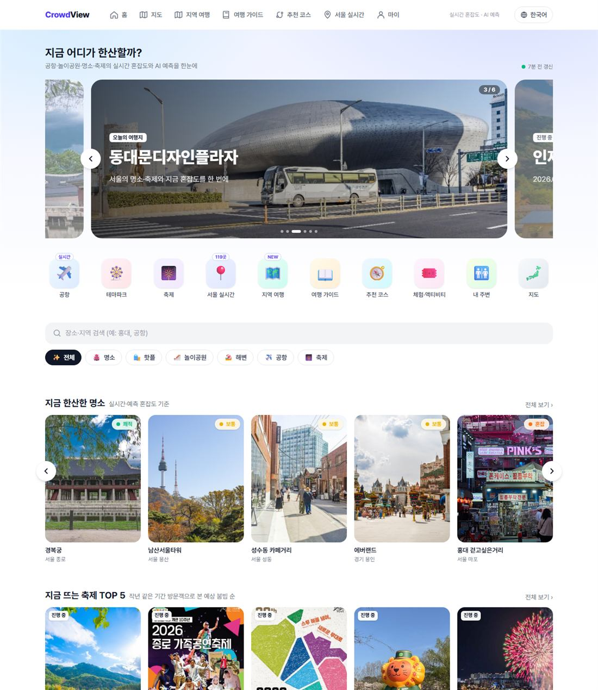
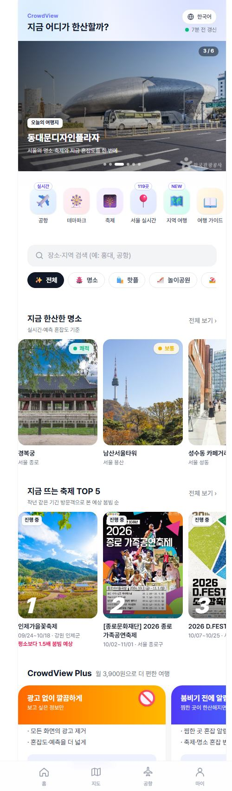
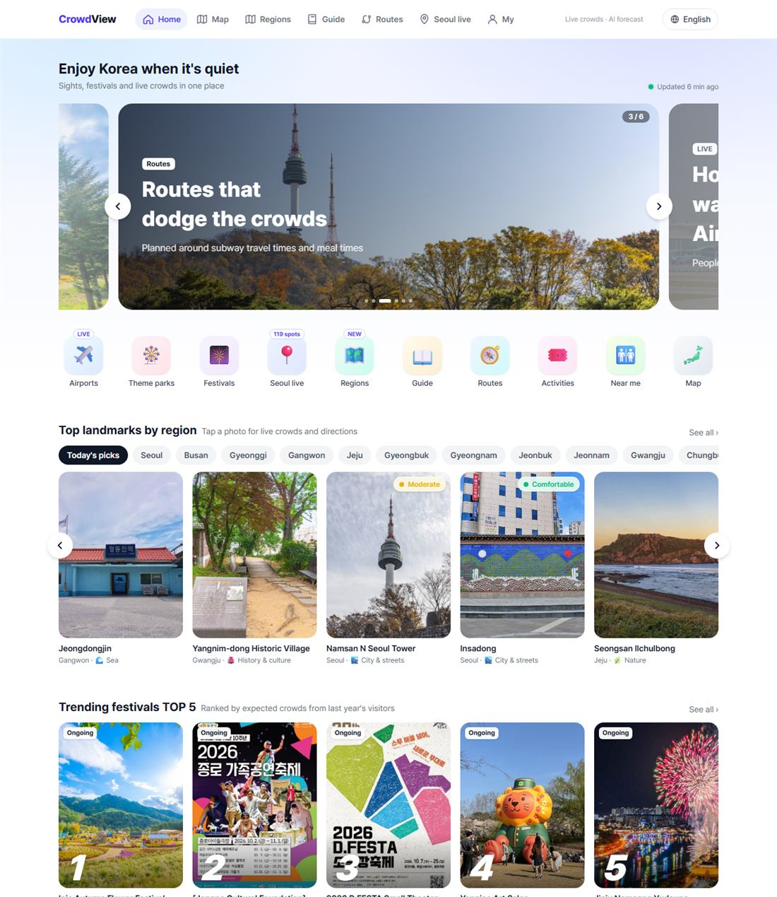
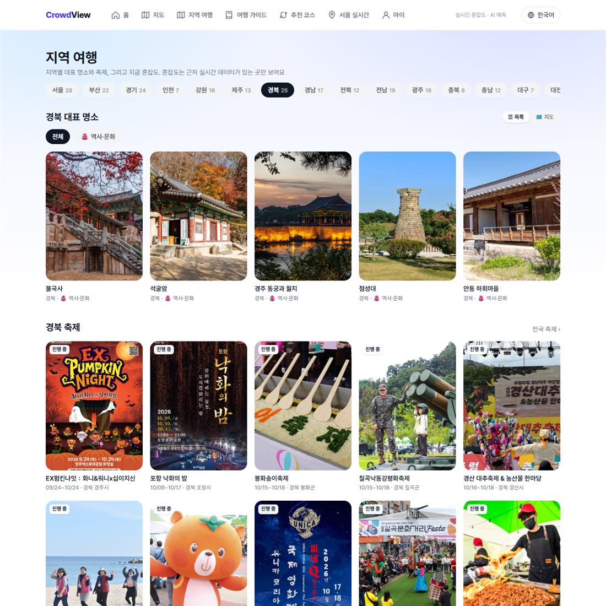
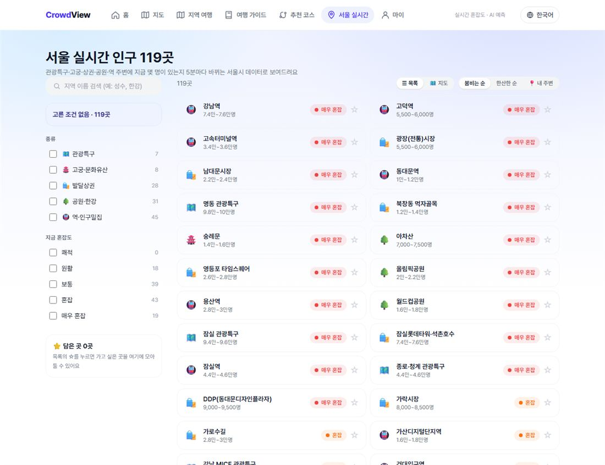
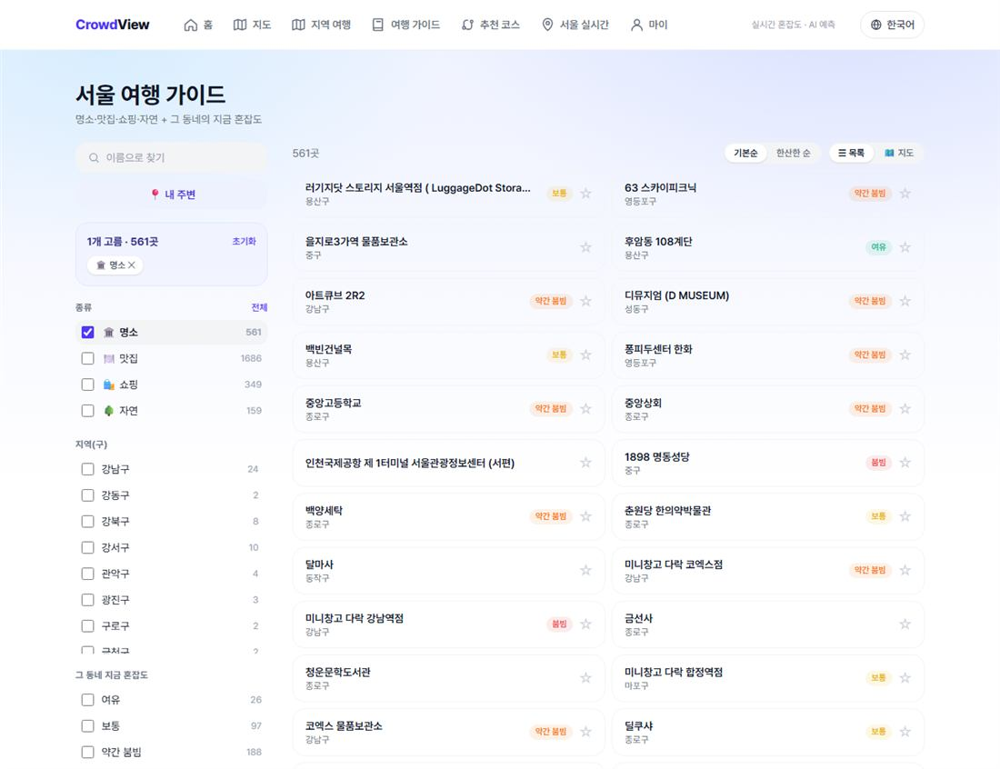
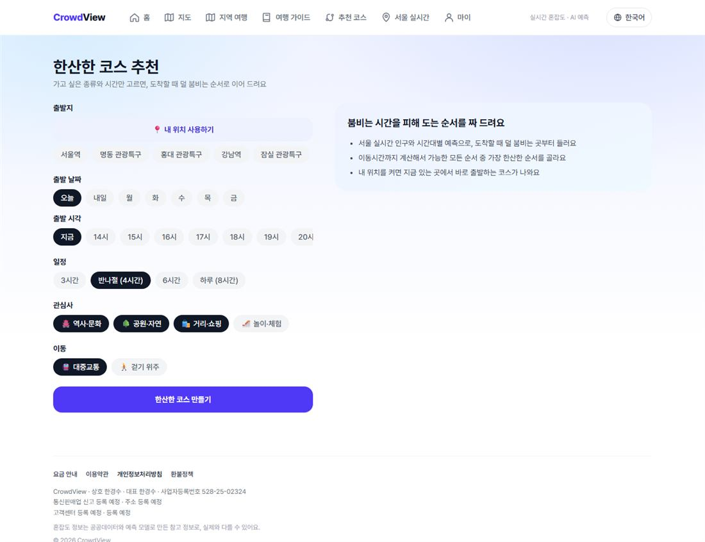
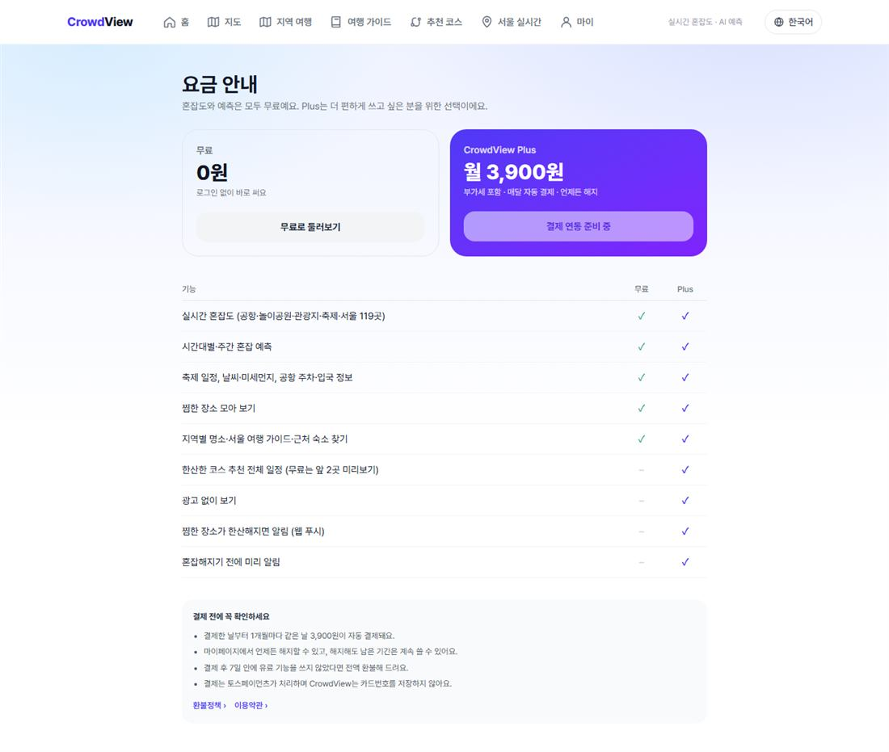
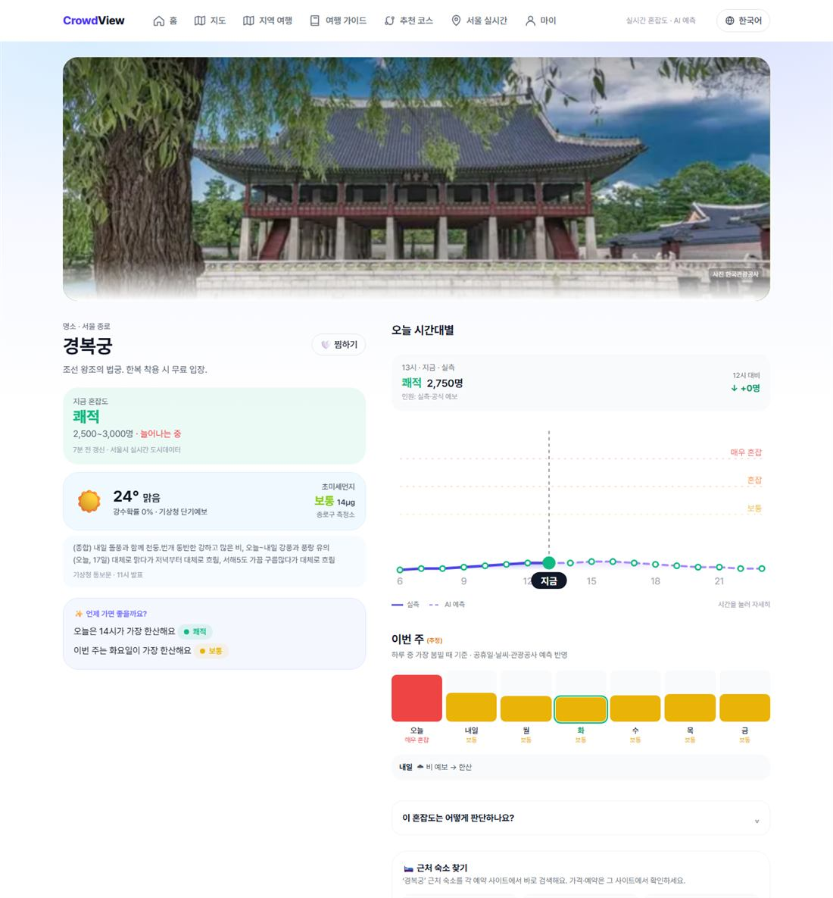
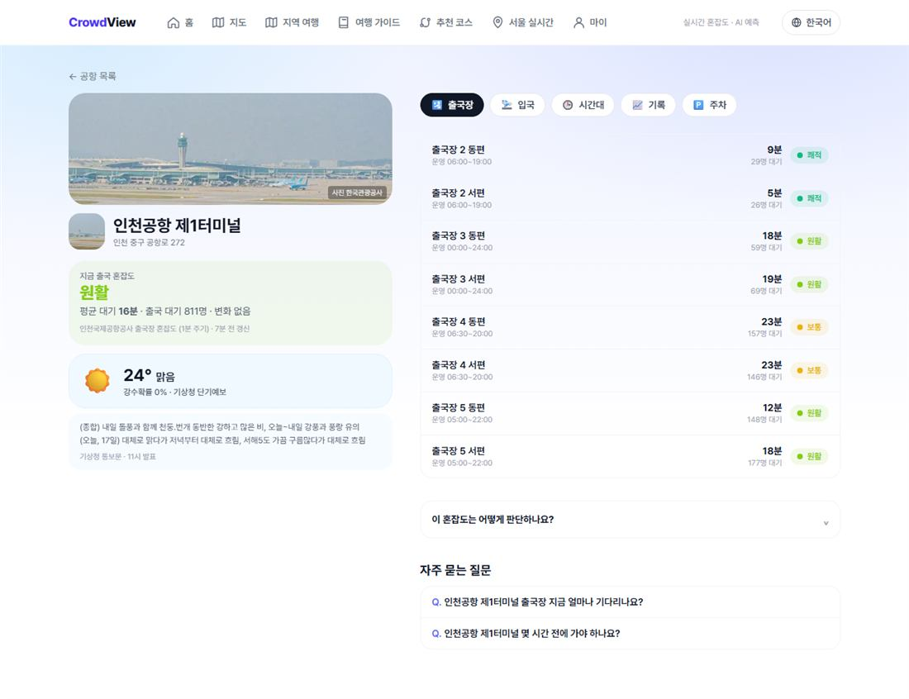
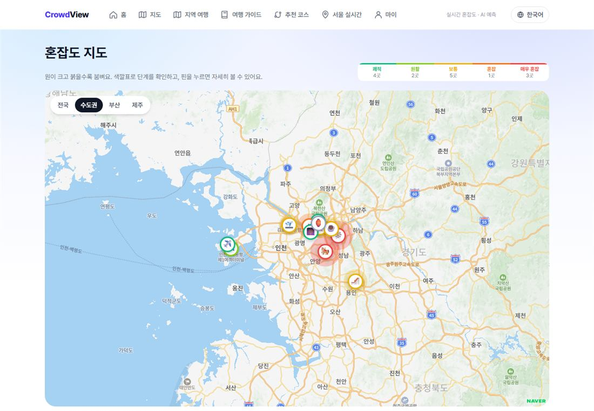
| 화면 | 기능 |
|---|---|
| 축제 (/events, /festival/{id}) | 전국 축제 일정·종류 7가지, 서울 축제는 실시간 인구, 그 외는 작년 같은 기간 방문객으로 혼잡 예측, 숙소 찾기 |
| 내 주변 (/near) | 공중화장실(24시간·장애인·기저귀 교환대 표시) · 명소·맛집 · 문화공간 · 체험 예약 · 무료 와이파이 |
| 마이 (/me) | 로그인(카카오·구글), Plus 상태·해지·7일 환불, 내 혼잡 알림 모아보기·끄기, 찜, 관심 키워드 추천 |
| 요금·약관 (/pricing, /terms, /privacy, /refund) | 무료 vs Plus 표, 결제 전 확인 사항, 약관·개인정보·환불정책 |
| 운영 도구 (/admin) | ADMIN_EMAILS만: 구독자 목록, 최근 결제 100건, 해지·전액/일부 환불 (디스코드 기록) |
| AI·검색 노출 | /llms.txt, 공개 API /api/public/crowd, sitemap·robots(AI 로봇 허용), 구조화 데이터(FAQ·WebSite) |
| 항목 | 내용 |
|---|---|
| 가격 | 월 3,900원 (부가세 포함), 매달 같은 날 자동 결제, 언제든 해지(남은 기간 이용) |
| Plus 혜택 | 광고 제거 · 혼잡 알림(장소·서울 119곳, 한산해지면/붐비기 시작하면, 웹 푸시) · 코스 추천 전체 일정(무료는 앞 2곳 미리보기) |
| 무료 | 모든 실시간 혼잡도·예측, 축제, 날씨, 지역 여행, 가이드, 숙소 찾기, 찜 |
| 결제 | 포트원 V2 + 토스페이먼츠 빌링키. 첫 결제 → 다음 달 예약 → 웹훅(Transaction.Paid/Failed)으로 연장. 금액·상태는 항상 포트원에 다시 조회해서 판단 |
| 실패 | 결제 실패 상태(past_due), 24시간 뒤 다시 시도 최대 3회, 기간 끝 3일 뒤 만료 |
| 환불 | 결제 후 7일 이내 + 유료 기능 미사용이면 이용자가 직접 전액 환불. 그 밖은 운영 도구에서 전액/일부 환불 |
| 사전 고지 | 자동결제 7일 전 메일(받을 수 있는 주소일 때) + 웹 푸시. 카카오 로그인은 이메일이 없어 푸시만 |
| 운영 알림 | 결제 실패·구독/해지 실패·웹훅 서명 불일치·수집 전체 실패 → 디스코드 (같은 내용 10분에 1번) |
[브라우저] 포트원 SDK로 빌링키 발급 → POST /api/plus/subscribe → 포트원: 빌링키로 3,900원 결제 → 다시 조회(PAID·금액 확인) → DB 기록 → 다음 달 같은 날 결제 예약 (schedule) [포트원] 예약일에 결제 → 웹훅 /api/portone/webhook (서명 확인) → 다시 조회 → 기간 연장 → 다음 예약 [매일 04:00 KST] 만료 정리 · 7일 전 안내 (Vercel Cron /api/cron/refresh)
“하루 최대”는 캐시 주기로 계산한 상한이며 이용자 수와 무관합니다. 공공데이터포털 한도는 개발계정 기준(출시 전에 운영계정 전환 필요).
| API | 용도 | 주기 | 하루 최대 / 한도 |
|---|---|---|---|
| 서울시 실시간 도시데이터 | 서울 119곳 인구·12시간 예측, 서울 축제 실시간 | 10분 (수집기) | 한도 없음 (1회 1,000건) |
| 서울시 열린데이터 (정적) | 화장실·와이파이·문화공간·Visit Seoul·체험 예약·지하철 역/역간 시간·역별 승하차 | 주 1회 (GitHub Actions) | 무료 |
| 인천공항 출국장 T1/T2 | 출국장 대기 | 10분 | 144 / 1,000 (14%) |
| 인천공항 주차·승객예고·입국장·주차면·요금 | 공항 화면 | 5분~1일 | 최대 288 / 1,000 (29%) |
| 한국공항공사 혼잡·주차·예상 승객 | 김포·김해·제주 | 5~30분 | 최대 864 / 5,000 (17%) |
| 기상청 단기·중기·통보문 | 날씨·예측 보정 | 1~6시간 | 약 400 / 10,000 |
| 에어코리아 | 미세먼지 | 1~3시간 | 128 / 500 (26%) |
| 천문연구원 특일 | 공휴일 | 12시간 | 약 150 / 10,000 |
| 관광공사 TourAPI | 축제·운영시간·명소 사진(주 1회 66+1,856곳) | 6시간~1주 | 약 15 + 주 1회 약 120 / 1,000 |
| 관광공사 데이터랩·집중률·연관 관광지 | 축제 혼잡 예측·날짜별 예측·함께 가면 좋은 곳 | 6시간~30일 | 최대 200 / 1,000 |
| 부산시 생활인구 | 해운대 방문자 구성 | 1일 | 12 |
| ThemeParks.wiki | 에버랜드·롯데월드 놀이기구 대기 | 2분 | 720 / 분당 300 (무료, 출처 표기) |
| 네이버 지도 (NCP) | 지도 화면 | 지도 열 때 | 월 1,000만 건 무료 |
| NCP Geocoding | 가이드 주소 → 좌표 (새 주소만) | 주 1회 | 실행당 최대 3,000건 |
| Papago | 축제·지역 이름 번역 | 새 이름만 (90일 보관) | 하루 3만 자 보호 |
| SK open API (TMAP·장소 혼잡도) | 축제 장소 혼잡 | — | 키 없음 (꺼짐) |
src/data/seoul/*.json(약 6MB: 화장실·와이파이·문화공간·가이드·체험·주소 좌표·지하철 노선망 subway.json·역별 승하차 모양 station-profile.json), src/data/korea/landmarks.json(66곳), spots.json(1,856곳). 브라우저는 /data/*.json을 CDN에서 받음 → 이용자가 늘어도 서버 실행 0.
| 점수 | 0~19 | 20~39 | 40~59 | 60~79 | 80~100 |
|---|---|---|---|---|---|
| 단계 | 쾌적 | 원활 | 보통 | 혼잡 | 매우 혼잡 |
서울시 단계는 여유 25 · 보통 48 · 약간 붐빔 68 · 붐빔 88점으로 바꿈. 공항은 대기 인원·시간, 놀이공원은 놀이기구 대기, 그 외는 예측 모델(요일·시간·공휴일·날씨·관광공사 집중률)로 점수화. 실측이 아니면 화면에 “추정/예측” 표시.
관광공사 데이터랩 시군구 일별 방문자로 작년 같은 기간(같은 요일) 외지인·외국인 방문객 ÷ 그 전 4주 같은 요일 평균. 서울 축제는 장소 800m 안 서울 실시간 지역의 지금 인구.
| 단계 | 내용 |
|---|---|
| 후보 | 우리 장소 + 서울 실시간 지역(역 주변 제외) 중 관심사가 맞고 출발지에서 대중교통 15km·걷기 3.5km 안. 서로 600m 안은 하나만. ☆ 담은 곳은 관심사·거리와 상관없이 먼저 |
| 이동시간 | 1.2km 안 걷기(4.5km/h × 1.3 우회). 그 밖은 지하철 노선망 다익스트라: 역까지 걷기 + 기다림 4분 + 갈아타기 4분 + 내려서 걷기. 1~8호선은 실제 역간 시간, 다른 노선은 거리로 어림(38km/h, 공항철도 60km/h), GTX-A 제외. 역이 없으면 직선거리 어림(버스 포함 12분 + 18km/h) |
| 비용 함수 | Σ(도착 시각 혼잡 점수 × 1) + 이동 분 × 0.8 + 개장 대기 분 × 0.4 + 같은 관심사 연속 8 + 식사 놓침 30 |
| 최적화 | 욕심쟁이로 최대 6곳 고른 뒤 방문 순서 720가지를 모두 비교 |
| 제약 | 일정 안에 끝내기, 운영 시간(그날 기준), 문 열기 90분 전까지 도착하면 기다림, 점심 11:20~12:40·저녁 17:20~18:40 시작 1시간(맛집 896곳 중 1.2km 안, 대표 메뉴 있는 곳) |
| 설명 | 그날(9~21시) 가장 한산한 시간 도착 / 피한 꼭대기 시각 / 개장 대기 |
한계: 버스 경로를 따로 계산하지 않음, 서울 중심(다른 지역 후보 적음), 예측 정확도 미검증 (13장).
[브라우저·PWA] ──> Cloudflare(DNS만) ──> Vercel Pro (icn1, Next.js 16 App Router, Node 런타임)
├─ 페이지: ISR(60초~1일) + CDN, 정적 JSON /data/*.json
├─ API: /api/route, /api/alerts, /api/plus/*, /api/portone/webhook, /api/admin/*, /api/public/crowd
└─ Cron: 10분 수집기(/api/cron/refresh) · 매일 비용 리포트(/api/cron/cost-report)
Upstash Redis ── 실시간 혼잡 crowd:*, API 캐시, 하루 호출 수, 번역 캐시, 공유 코스(30일), 운영 알림 중복 방지
Postgres(Neon 예정) ── 회원·세션(Better Auth)·구독·결제·찜·담은 곳·푸시 구독·혼잡 알림 (migration 001~004)
GitHub Actions ── 주 1회 서울시·관광공사 정적 데이터 갱신(PR) · PR마다 타입 검사 + 테스트(CI)
lib/* 한 파일씩 감쌈 (fetch 기반, SDK 의존 최소). 결제도 포트원 REST 직접 호출t("한국어") + 번역 사전 4개 언어, 빌드 스크립트가 빠진 번역을 알려 줌키가 없으면 그 기능만 꺼지고 나머지는 동작합니다. “현재”는 운영 기준 확인값(✔ 켜짐 / ✖ 꺼짐).
| 환경변수 | 켜지는 기능 | 현재 |
|---|---|---|
SEOUL_OPENAPI_KEY, DATA_GO_KR_KEY | 서울시·공공데이터 전체 | ✔ (GitHub Secrets엔 DATA_GO_KR_KEY 없음 → 주간 명소 사진 갱신 건너뜀) |
NEXT_PUBLIC_NAVER_MAP_CLIENT_ID, NAVER_MAP_CLIENT_SECRET | 네이버 지도·Geocoding | ✔ |
KV_REST_API_URL/TOKEN (Upstash) | 캐시·실시간 저장·호출 수 | ✔ |
CRON_SECRET | 수집기 보호 | ✔ |
PAPAGO_CLIENT_ID/PASSWORD | 이름 번역 | ✔ |
NCP_ACCESS_KEY/SECRET_KEY, DISCORD_WEBHOOK_URL, RESEND_API_KEY, REPORT_EMAIL_TO | 비용 리포트·운영 알림 | ✔ |
DATABASE_URL, BETTER_AUTH_SECRET/URL | 회원·결제·알림 저장 | ✖ (Neon 미생성) |
KAKAO_CLIENT_ID/SECRET, GOOGLE_CLIENT_ID/SECRET | 소셜 로그인 | ✖ |
NEXT_PUBLIC_PORTONE_STORE_ID/CHANNEL_KEY, PORTONE_API_SECRET, PORTONE_WEBHOOK_SECRET | Plus 결제 | ✖ |
NEXT_PUBLIC_VAPID_PUBLIC_KEY, VAPID_PRIVATE_KEY, VAPID_SUBJECT | 웹 푸시 알림 | ✖ |
MAIL_FROM (+ Resend 도메인 인증) | 회원 메일(자동결제 안내) | ✖ |
ADMIN_EMAILS | 운영 도구 /admin | ✖ |
NEXT_PUBLIC_ADSENSE_CLIENT, …SLOT_RAIL/INLINE | 구글 애드센스 | ✖ (신청 전) |
NEXT_PUBLIC_GOOGLE/NAVER_SITE_VERIFICATION | 검색엔진 소유 확인 | ✖ |
SK_OPENAPI_APP_KEY | SKT 장소 혼잡도 | ✖ |
| 서비스 | 지금 | 출시 후 (예상) | 메모 |
|---|---|---|---|
| Vercel Pro | 약 28,000 ($20) | 약 28,000 | 사용량 크레딧 $20 포함, 상한 $50 |
| 도메인 (Cloudflare) | 약 1,700 | 약 1,700 | 연 약 $14 |
| Upstash Redis | 0 (무료 50만 명령) | 0~3,000 | 월 22만~54만 명령 추정, 10/23 실사용 확인 예정 |
| Neon Postgres | — | 0 (무료) ~ 약 26,000 ($19) | 무료는 컴퓨트 시간 제한. 10분 수집기가 DB를 깨우지 않게 설계 |
| 네이버 지도·Geocoding | 0 | 0 | 월 1,000만 건 무료 |
| Papago | 수백 | 수백~천 | 새 이름만 번역, 하루 3만 자 보호 |
| Resend 메일 | 0 | 0 | 월 3,000통 무료 |
| 공공데이터·서울시·ThemeParks | 0 | 0 | 한도만 관리 |
| 합계 | 약 3만 원 | 약 3만~6만 원 | 결제 수수료·부가세 제외 |
| 기능 | 비용 구조 | 대략 |
|---|---|---|
| LLM 여행 추천·설명 (Claude Haiku급) | 입력 $1·출력 $5 / 100만 토큰 | 이용자 1만 명·질문 수 제한 시 월 약 14만 원 (기존 시뮬레이션) |
| 대중교통 경로 API (ODsay 등) | 호출당 과금 | 코스당 6~10회 → 캐시 필수 |
| 오류 모니터링 (Sentry 등) | 무료 플랜 시작 | 0~$26 |
| 이미지 캐시·리사이즈 | Vercel Image 최적화 사용량 | Pro 포함량 안 예상 |
| 외국어 TourAPI·숙소 제휴 | 무료 (활용신청·제휴 승인) | 0 (오히려 수익) |
| PR | 내용 |
|---|---|
| #29~#50 | Papago 절약, Vercel Cron 이전, 축제 분류·예측, 공공데이터 5종, 서울 119곳, SKT(키 대기), 요금·약관, SEO·GEO, 애드센스, 로그인·결제·푸시, 코스 추천, 가이드·내 주변, 정확한 좌표, DB 절약 |
| #51 | 코스: 지하철 노선망 기반 이동시간 + 점심·저녁 맛집 |
| #52 | 야놀자형 홈(포토 배너·아이콘 메뉴·Plus 배너·사진 카드, 언어별 순서) + 지역 여행 /explore(대표 명소 66곳) |
| #53 | 서울 실시간·가이드: 검색 + PC 왼쪽 정리 패널 + ☆ 담기 |
| #54 | 근처 숙소 찾기 (놀·여기어때·네이버·Airbnb·Trip.com·Booking.com) |
| #57 | ☆ 담은 곳을 코스에 먼저 넣기 |
| #58 | 코스 내일·주말 출발 (지하철 승하차 패턴 예측) |
| #60 | 배너 자동 넘김 수정, 홈 아래쪽 새 카드·이모지 칩, 탭별 지도 보기 |
| #61 | 공항 상세 칩 탭, 은은한 파랑 그라데이션 배경, 지도 범례를 소제목 오른쪽 가로 막대로 |
| #62 | 결제 운영: 디스코드 운영 알림, 자동결제 7일 전 안내, 운영 도구 /admin |
| #63 | 자동 테스트 + CI, 코스가 개장 시각까지 기다리도록 |
| #64 | 코스 공유 링크 · 장소별 이유 · 여기서부터 다시 짜기 |
| #65 | 서울 119곳 혼잡 알림 + 마이 탭 알림 모아보기·끄기 |
| #66 | 담은 곳 로그인 동기화 |
| #67 | 전국 명소 디렉터리 1,856곳 + 가이드 “한산한 순” |
| 항목 | 설명 | 영향 |
|---|---|---|
| 예측 정확도 미검증 | 패턴 예측·장소 모델을 실제와 비교한 적 없음. 주말 시간대 모양은 평일 위주 월 자료를 보정한 근사 | 신뢰도·유료 가치 |
| 로그인·결제·알림 실검증 전 | 키가 없어 코드만 있고 실제 결제·푸시·메일 미시험 | 출시 지연 위험 |
| 외국어 콘텐츠 공백 | 명소 디렉터리 1,856곳 이름이 한국어, 서울 지역 이름은 Papago 번역 품질 의존 | 외국인 경험 |
| 서울 편중 | 실시간·코스 후보 대부분 서울. 부산·제주 등은 명소·축제 안내 위주 | 지방 이용자 |
| 레이트리밋 없음 | /api/route 반복 호출 시 계산·번역 비용 | 비용·안정성 |
| 오류 모니터링 없음 | 브라우저 오류·느린 페이지를 모름 (서버 쪽 운영 알림만) | 품질 |
| 관광공사 이미지 핫링크 | 원본 서버가 느리거나 막으면 사진이 깨짐, 큰 원본 사진으로 홈이 무거움 | 속도·안정성 |
| 숙소는 검색 링크만 | 매물·가격 비교 없음, 제휴 미승인이라 수익 없음, 아고다 빠짐 | 수익 |
| 공공데이터 개발계정 | 운영계정 전환 전이라 한도가 작음 | 출시 후 장애 위험 |
| 법적 미완 | 통신판매업 신고번호·주소·약관 시행일·법률 검토 | 결제 심사 |
P0 출시 전 필수 · P1 출시 후 3개월 · P2 여유 있을 때. 작업량은 AI 코딩 기준 대략.
| # | 우선 | 항목 | 무엇을 | 작업량 | 누가 |
|---|---|---|---|---|---|
| 1 | P0 | 로그인·결제·알림 실검증 | Neon·카카오/구글·포트원 테스트 채널·VAPID·Resend 도메인 → 결제·해지·환불·푸시·메일 전체 흐름 시험 | 1~2일 | 키: 주인 / 검증: Claude |
| 2 | P0 | API 레이트리밋 | /api/route·/api/alerts·/api/public에 IP·회원별 분당 제한(Redis) | 2시간 | Claude |
| 3 | P0 | 오류·속도 모니터링 | 브라우저 오류 수집(Sentry 무료 또는 자체 /api/log), Vercel Speed Insights | 반나절 | Claude |
| 4 | P0 | 공공데이터 운영계정·서울시 활용사례 | API마다 활용사례 등록 후 전환 (인천공항 1천 → 100만/일) | 반나절 | 주인 |
| 5 | P0 | 법적 마무리 | 통신판매업 신고, 사업자 정보, 약관 시행일, 결제 심사 서류 | — | 주인 |
| 6 | P0 | 이미지 최적화 | 관광공사·축제 사진을 작은 썸네일로(next/image 또는 리사이즈 캐시), 홈 첫 화면 속도 | 반나절 | Claude |
| 7 | P1 | 예측 정확도 측정 | 예측값을 저장해 다음 날 실제(10분 수집)와 비교, 단계 일치율 대시보드, 주말 모양을 상권분석(요일·시간대 유동인구)으로 보정 | 1~2일 | Claude |
| 8 | P1 | 숙소 제휴 | 아고다 파트너 딥링크(위치 검색), Trip.com·Booking.com 제휴 ID, 클릭 기록 | 반나절 (승인 후) | 신청: 주인 |
| 9 | P1 | 외국어 콘텐츠 | TourAPI 외국어 서비스(영·일·중) 활용신청 → 명소 디렉터리·축제 다국어, 설명 문장 | 1일 | 신청: 주인 |
| 10 | P1 | 명소 상세 페이지 | 디렉터리 1,856곳에 /spot/{id} 상세(사진·설명·운영 시간·근처 혼잡·숙소) → 검색 유입 | 1일 | Claude |
| 11 | P1 | 외국인 단기권 | 7일 2,900원 등, 해외 카드 결제(포트원 해외 PG) | 1~2일 | 계약: 주인 |
| 12 | P1 | 코스 지역 확대·버스 | 부산·제주 후보, 대중교통 경로 API(캐시), 코스 저장 목록(마이) | 2~3일 | Claude |
| 13 | P1 | E2E 테스트 | Playwright로 홈·코스·공유·결제(테스트 채널) 흐름, 화면 회귀 | 1일 | Claude |
| 14 | P1 | 검색 등록·콘텐츠 SEO | 구글·네이버·Bing 등록, sitemap 제출, 지역·명소 설명 글 | 반나절 | 등록: 주인 |
| 15 | P2 | LLM 추천·설명 | 코스 이유를 자연스러운 다국어 문장으로, “이런 곳 어때요” 대화형 추천(횟수 제한·캐시) | 1~2일 | Claude |
| 16 | P2 | 맛집 웨이팅 예측 | 식사 시간 패턴 + 상권 혼잡으로 “지금 가면 대기 짧을 가능성” | 1일 | Claude |
| 17 | P2 | 앱 출시 | PWA → Google Play(TWA), 앱 화면 원칙 재정리 | 1~2일 + 심사 | 함께 |
| 18 | P2 | Redis 최적화 | 조회 묶기(MGET), Upstash 사용량에 맞춰 조정 (10/23 확인) | 2시간 | Claude |
| 19 | P2 | 접근성·다크 모드 | 색 대비, 키보드 이동, 스크린리더 라벨 | 반나절 | Claude |
| 20 | P2 | 커뮤니티 | 코스 후기·사진, 인기 코스 모음 | 2~3일 | Claude |
문서 끝 · 작성: Claude (CrowdView 저장소 코드·데이터·설정 기준) · 2026-10-17